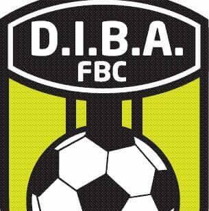

Historia del Escudo

El escudo de DIBA FBC es mucho más que un símbolo deportivo: es el corazón de nuestra institución.
"Creado por Reinaldo Pérez González, este emblema ha guiado al club desde su fundación, adaptándose a los nuevos tiempos sin perder su identidad original."
Simbología
Colores
Amarillo (Energía) y Negro (Fortaleza y Disciplina).
Balón
La pasión inquebrantable como motor de cada sueño.
Estrellas
Las metas alcanzadas y los sueños por conquistar.
Lema
"Fuerza y Lealtad"
Evolución en el Tiempo
Fundación
Primer diseño con enfoque en la energía pura del amarillo y la pasión del fútbol base.
Renovación
Modernización visual integrando el lema institucional y un diseño más premium.